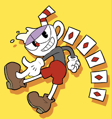
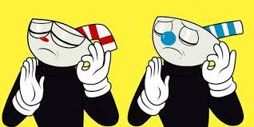
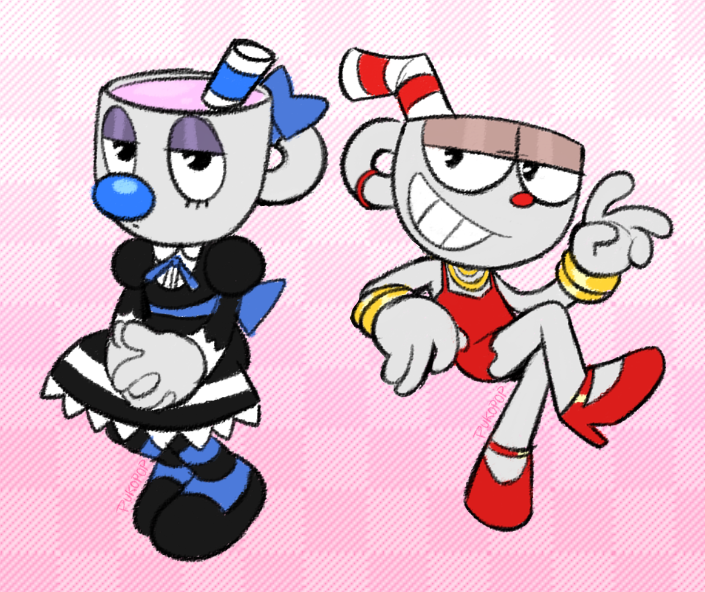

Cuphead — відеогра жанрів «біжи і стріляй» і платформера, розроблена і видана канадською командою StudioMDHR Entertainment. Видана для Windows і Xbox One 29 вересня 2017 року, для macOS 19 жовтня 2019, та для Nintendo Switch 17 квітня 2019 року. Гра виконана в комічному стилі анімації Disney 1930-х років та оповідає про пригоди двох чоловічків — Капхеда і Маґмена, що повинні вчасно перемогти низку ворогів аби врятувати свої душі від Диявола.
Головний герой, Капхед — це чоловічок з головою-чашкою (англ. cup — чашка), що стріляє з пальця по численних ворогах. Він рухається наповненими перешкодами рівнями зліва направо, може бігати, стрибати, присідати, уникаючи при цьому зіткнень з ворогами та їхніх пострілів. Успішні парирування атак (відбивання підсвічених об'єктів долонею) заповнюють спеціальну шкалу, яка дозволяє здійснити спеціальну атаку. На рівнях трапляються монети, за які потім здійснюються покупки інших атак і корисних предметів. При грі вдвох другий гравець керує аналогічним до Капхеда персонажем Маґменом (англ. Mugman, від англ. mug — кухлик).Переміщення між рівнями відбувається на карті місцевості, що має розгалужені шляхи. Гравець може обирати до якого з декількох рівнів вирушити. На карті розташовані і магазини, де за монети купуються звичайні та спеціальні атаки. Рівні поділяються на виконані в стилі «біжи і стріляй» з рядовими ворогами та рівні з босами, де позиція героя більш фіксована. По закінченню рівня виводиться звіт зі статистикою успіхів гравця.
Капхед і Маґмен — брати-чашки, що не послухавшись попереджень старого Чайника вирушають до казино. Ним керує Диявол і коли брати майже виграють джекпот, він підмовляє поставити власні душі. Капхед і Маґмен програють та благають не забирати їхні душі. Диявол погоджується помилувати їх, якщо ті зберуть до опівночі наступної доби контракти на душі, викрадені іншими боржниками. Коли брати повертаються додому, Чайник дає їм зілля, що дозволяє стріляти з пальців і Капхед з Маґменом вирушають на пошуки. Брати забирають контракти Картоплини, Цибулини та Моркви в саду, а в лісі — згустка слизу Гупі ля Гранде. В барі вони перемагають жаб-боксерів Ріббі і Крокса, а потім у повітрі дирижабль Хільду Берг і в лісі гвоздику Кагні. Потім відбирають контракти в баронеси фон Бон Бон в землі солодощів Шугарленді, клоуна Беппі в луна-парку, джина Джиммі, птаха Воллі Ворблс і дракона Гріма Сірника. Їм вдається добути контракт королеви бджіл Ханібаттомс, капітана Брайніберда, кота Вернера Вермана. На звалищі вони долають божевільного доктора Кагла, а в морі сирену Калу Марію. Далі вони отримують контракти актриси Саллі Стейджплей і Потяга-привида. Прийшовши в казино, брати зустрічають шоумена Короля Кубика, що намагається зупинити їх, боячись, що коли вони здолали всіх боржників, то позбудуться і Диявола. Кубик викликає на підмогу своїх спільників, але всі вони врешті програють. Потім брати стикаються з самим Дияволом. Від результатів бою залежить фінал гри. Хороший фінал. Перемігши Диявола, брати спалюють усі контракти, про що повідомляють боржникам. Ті приєднуються до святкування, де Чайник пишається Капхедом і Маґменом. Наприкінці оповідач натякає на продовження. Поганий фінал. Якщо Капхед і Маґмен програють, або добровільно віддають контракти боржників, Диявол заволодіває їхніми душами та перетворює на своїх слуг. Одержимі злом, вони регочуть разом з Дияволом, який обіцяє, що тепер у них «добіса часу».
